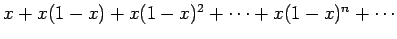
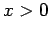
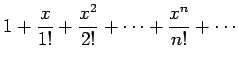
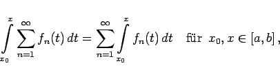
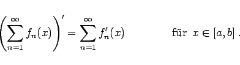

Inhalt Index DeskTop Bronstein

 Unendliche Reihen Funktionenreihen Gleichmäßige und ungleichmässige Konvergenz
Unendliche Reihen Funktionenreihen Gleichmäßige und ungleichmässige Konvergenz


| Beispiel A |
|
Die Summe der Reihe  (7.73a) ist unstetig: S(x) = 0 für x = 0 und S(x) = 1 für . |
| Beispiel B |
|
Die Summe der Reihe  (7.72a) ist eine stetige Funktion: Die Reihe ist ungleichmäßig konvergent, aber nicht in einem endlichen Gebiet, sondern auf der gesamten Zahlengeraden. |
|  | (7.75a) |
|  | (7.75b) |